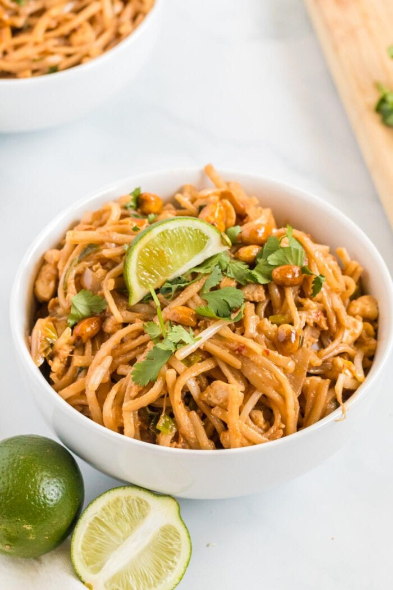

Tofu Pad Thai

Description
Noodles stir fried in a wok with pad thai sauce and other veggies.
Topped with marinated, crispy tofu and peanuts.
Recipe Credit goes to: Minimalist baker
Ingredients
Sauce
- 1 ½ tsp tamarind paste / concentrate* (or sub additional 1 Tbsp / 15 ml lime juice as recipe is written)
- 1/3 cup coconut aminos (or sub half the amount with tamari or soy sauce and work your way up as it’s saltier)
- 3 ½ Tbsp coconut sugar
- 1 ½ tsp chili garlic sauce
- 1 ½ Tbsp lime juice
- 1-2 tsp Vegetarian Fish Sauce ( or store-bought // optional)
Stir Fry
- 1 Tbsp sesame oil (if avoiding oil, omit and use a nonstick pan)
- 1 cup cubed extra firm tofu
- 2 Thai red chilies (fresh or dried), chopped OR 1/2 tsp chili flakes (optional)
- 2 cloves garlic, minced (2 cloves yield ~1 Tbsp or 6 g)
- 1 Tbsp coconut aminos (or tamari)
- 1 cup bean sprouts
- 1 cup chopped green onions
- 1/3 cup chopped roasted salted peanuts
Noodles
- 8 ounces Pad Thai rice noodles (We like Annie Chun's brand)
For serving (optional)
- Lime wedges
- Bean sprouts
- Peanut sauce
- Shredded carrot
- Cilantro
- Sriracha or Chili Garlic Sauce (we like Huy Fong Foods brand)
Steps
- To a small saucepan, add tamarind, coconut aminos, coconut sugar, chili garlic sauce, lime juice, and vegetarian fish sauce (optional) and heat over medium heat until just simmering. Cook for 30 seconds, stirring occasionally, then turn off heat. Set aside.
- Ensure all stir fry ingredients are prepped, including cubed (briefly pressed) tofu, chopped green onions, minced garlic, bean sprouts, and chopped peanuts. If serving with peanut sauce (optional), prepare at this time.
- Add Pad Thai noodles to a large bowl and cover with just boiling water. Stir and cover and cook according to package instructions (usually about 5-6 minutes or until al dente).
- Drain noodles and toss with a little sesame oil to prevent sticking. Set aside.
- Heat a large-rimmed skillet over medium heat. Once hot, add oil and tofu and sauté for about 4 minutes, turning occasionally so it browns on all sides. Add red pepper flakes or Thai chilies, garlic, and coconut aminos (be careful, as the coconut aminos can splatter). Toss gently to combine until garlic is just slightly browned.
- Add noodles, Pad Thai sauce, bean sprouts, green onions, and peanuts and cook over medium-high heat, tossing occasionally (tongs are most useful) for about 2-3 minutes or until the sauce has coated everything and the dish is hot.
- To serve, plate with additional garnishes such as lime wedges, bean sprouts, peanut sauce, shredded carrot, cilantro, and sriracha or chili garlic sauce (all optional).
- Leftovers will keep in the refrigerator for approximately 3-4 days.